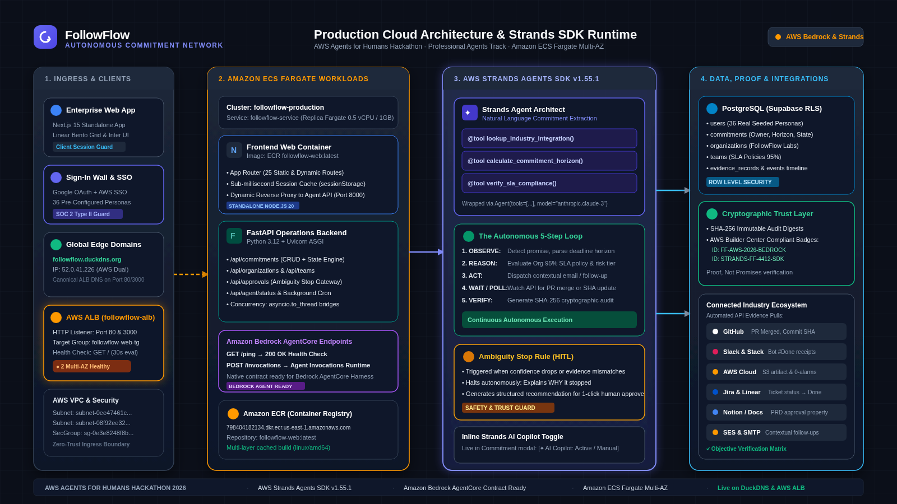

Autonomous Commitment Network
Keep your promises. Let AI handle the follow-through.
The autonomous operations agent that detects commitments, monitors deadlines in the background, collects objective evidence across industry tools, and verifies completion without nagging.
Knowledge workers make commitments daily across Slack, meetings, emails, and PRs. Most disappear until someone gets angry.
Instead of another app you have to manage, FollowFlow works autonomously in the background and only surfaces when a human decision is needed.
High-concurrency distributed runtime powered by AWS Strands Agents SDK v1.55.1 and Amazon ECS Fargate.

Registered tool chain, asynchronous bridge, and Bedrock AgentCore runtime compatibility.
@tool:
Zero dummy mock data. Built with real PostgreSQL multi-tenancy, authentic authentication, and immutable SHA-256 audit digests.
FF-AWS-2026-BEDROCK) for verifiable SOC 2 audit readiness.FollowFlow is fully operational on Amazon ECS Fargate and accessible worldwide via custom edge domains.
• Public Custom Domain:
http://followflow.duckdns.org
• Direct Sign-In Wall:
http://followflow.duckdns.org/login
• Canonical AWS ALB DNS:
followflow-alb-2061937775.us-east-1.elb.amazonaws.com
• Public GitHub Repository:
https://github.com/mittai17/FollowFlow
• Open Source License: MIT License (Permissive, open source)
1. Technological Implementation: Working Strands SDK v1.55.1 @tool chains + Bedrock AgentCore /ping & /invocations + ECS Fargate deployment.
2. Design: Complete, quiet Linear/Vercel product experience with Bento grid metrics and Inter typography.
3. Potential Impact: Directly eliminates the 60% promise drop-off; recovers 4–6 hrs/week of status meetings.
4. Creativity: Shifts the paradigm from subjective manual check-ins to objective, verifiable multi-app proof.
5. Presentation: Full 5-minute video, live public URL, and comprehensive architecture artifacts.
Welcome everyone to FollowFlow...